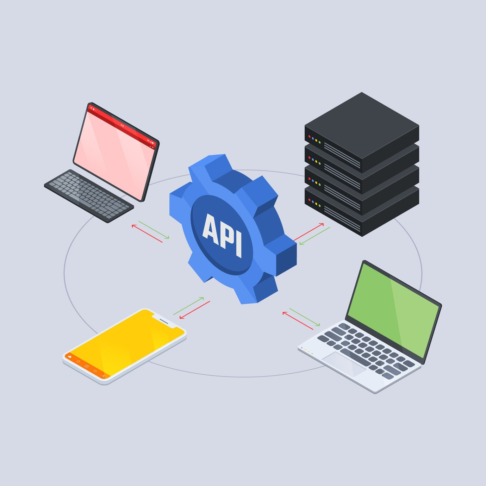

1️⃣ C’est quoi une API ?
Une API (Application Programming Interface) est une interface qui permet à deux applications de communiquer entre elles. Elle définit un ensemble de règles permettant l’échange de données et de fonctionnalités.
Découvrez l'importance des API dans le développement web.
Une API (Application Programming Interface) est une interface qui permet à deux applications de communiquer entre elles. Elle définit un ensemble de règles permettant l’échange de données et de fonctionnalités.